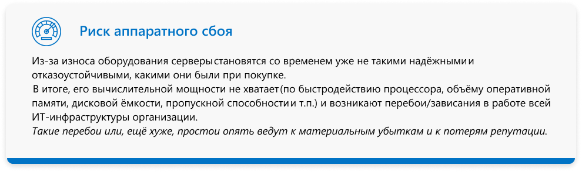

1.png)

-- Зачем переходить на Windows Server
.png)
.png)
Windows Server 2008 и 2008 R2
14 января 2020 года прекращается поддержка
Обновления
Регулярные обновление системы безопасности
выпускаться не будут
Защита
Не оставляйте свою инфаструктуру и приложение без защиты
Производительность
Мы готовы помочь вам перейти на обновлённые версии,
которые обеспечивают более высокий уровень безопасности,
производительности и внедрение инновации


Если вы используете устаревшее серверное оборудование и
операционную систему вы подвергаете свою инфраструктуру риску

.png)
Преимущества Windows Server 2019
.png)
.png)
.png)
.png)
Служба миграциихранилища

Новая технология, упрощающая миграцию служб хранилища
на более новую версию Windows Server.
Управление SMS осуществляется через Центр администрирования Windows, где
он предоставляет графические мастера, которые проводят инвентаризацию
данных на серверах, переносят данные и конфигурацию на более новые серверы,
а затем при необходимости переносят идентификационные данные старых
серверов на новые серверы. Большим преимуществом SMS является то, что
пользователям не нужно меняться после миграции. Поскольку имя сервера,
IP-адрес, общие ресурсы и разрешения сохраняются, нет необходимости
настраивать сценарии входа в систему или сопоставления сетевых дисков.